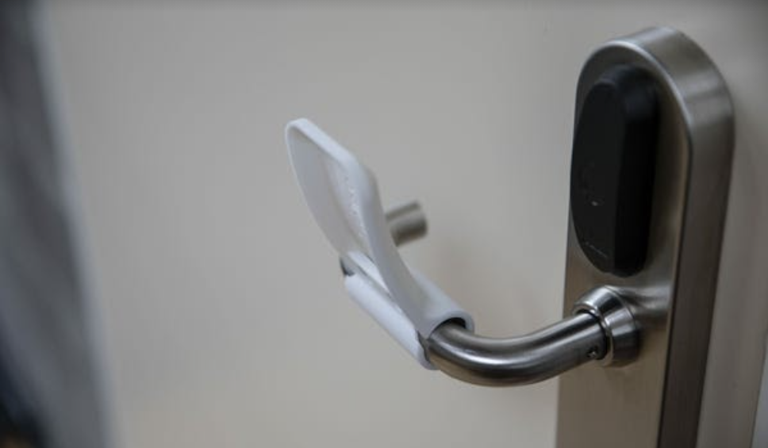
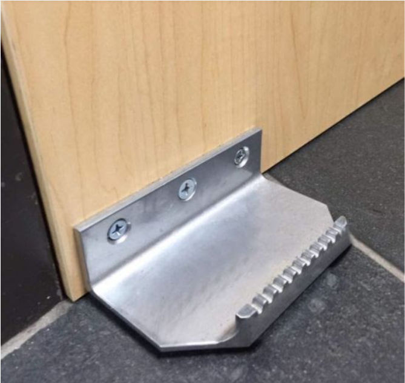
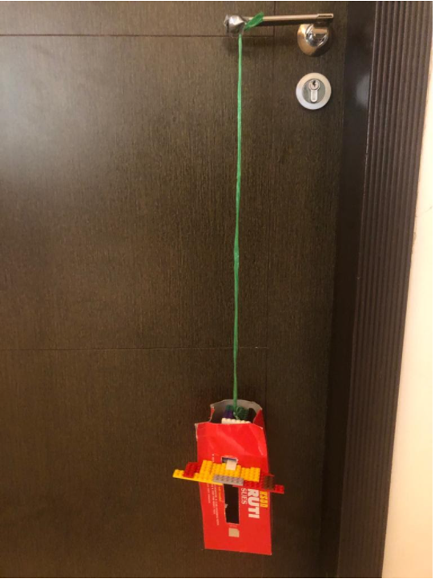

COVID-19 has resulted in massive changes to our daily lives, on a global scale. People are continuously trying to find ways to prevent the transfer of germs, not only currently, but also for the future, where everyone will be more conscious of disease transmission.
The WHO has listed, amongst other methods of transmission of the virus, the spread through contaminated objects and surfaces. When sneezing, coughing on, or touching surfaces, an infected person may leave particles called ‘fomites’ on objects/surfaces such as tables, doorknobs, and handrails; other people may then be infected by touching these surfaces and touching their eyes, nose, or mouths before cleaning their hands.
Door handles are one of the most obvious surfaces that are prone to contamination. In one study, 86% of people who touched a doorknob which had been sprayed with ‘particle tracers’. Furthermore, it was found that the contamination reached all the way to the door handles of the peoples’ houses.
Currently, there exist mainly three types of solutions that are popular.


Keeping in mind the shortcomings of the three existing solutions above, I tried to reach a design that was:


Using A tissue box, some lego blocks, and rope, I designed a physical prototype of my CAD model. This worked to pull down the handle with some struggle, but very often broke when pushed to open the door. I also had to tape the rope to the handle since when pressed down the handle would slip.
Improvements that were needed for the next prototype were:
* Making it better ergonomically; finding the optimum height it should be placed at and reducing the amount of movement needed by the person.
* Creating a clasp or some way to attach the rope to the handle (instead of tying and taping)
* Restricting the downwards movement to only one direction
* Keeping the centre of mass of the pedal below the rope, as the pedal currently tilted forward due to the moment produced by the force of the foot.
Prototype 2:
In ths design, I redesigned the box to ensure the pedal only moved vertically. I made two slots on either side of the box, and cut out the front. I then slid the metal frame through the slots. A plastic container was fitted onto the metal frame to act as the pedal. The main advantage of this design was that the foot would actually enter the box, so the downward force didn’t produce much of a turning effect which could have caused the pedal to snap.
Surprisingly, the double-sided tape at the back was sufficient to handle some amount of pulling. However, the model still only worked for pushing, since there was no grip on the pedal to pull with, nor was the box strong enough to withstand a pull. Also, the issue of tying the rope still wasn’t resolved.
Prototype 3
This prototype was a great improvement from the previous ones. It was very easy to assemble, with components that perfectly fit each other. The box, especially, was really sturdy. Surprisingly, the 3 strips of double-sided tape used to stick the box to the door was more than sufficient.
Yet, there were multiple flaws. Parts of the prototype weren’t strong enough; for example, the top of the pedal frame that the rope was tied around was too thin and snapped. Although the frame could withstand the force of one foot, it was not built to support the entire body weight of a person. Lastly, the frame had no stopper to prevent it from moving sideways through the slots.